report dispatcher
Andrew Martin and Chris Haid
2025-12-29
Source:vignettes/report_dispatcher.Rmd
report_dispatcher.Rmdbig idea
A common workflow in education analysis is to report progress against some internal slice of your organization - academic progress across schools, or student growth across classrooms, etc.
Stop me if you’ve heard this one before:
schools <- unique(mydata$schools)
for (sch in schools) {
this_sch <- mydata[mydata$school==sch, ]
grades <- unique(this_sch$grade_level)
for (gr in grades) {
...do some stuff here
}
}ugh. tedious to write, and very ungainly if you have more questions
of your data. want to report on both schools AND grades? now you’re
calling at two levels of a loop… need to go deeper in on one school -
say, to the teacher or classroom level? have fun stripping out the code
in gr and writing a new loop for classrooms.
what you need to make a plot
plot functions in mapvizieR really only need two things: - the mapvizieR object - a list of studentids to run.
most (if not all) of the time that list of studentids will have semantic meaning to you - a class, an advisory, a grade, a school - but the design principle we’re trying to follow is that if you give a plot a mapvizieR object and some studentids, you’ll get back a graphic.
we’ll need to break that assumption some of the time - for instance when we are plotting cohort growth, which has some strong assumptions about students representing ‘grade levels’. and some longitudinal plots risk becoming incoherent if you mix kids of different ages together. but if we can return a meaningful plot just given a list of studentids, that will be our point of departure.
a new workflow tool
report_dispatcher() is designed to make an analyst’s
life easier by giving you a high-level language for slicing and
reporting on schools. you give it the nested org units (that match
columns in your mapvizier[['roster']] data file) to iterate
over, and it hands back plots for all the permutations in those org
units.
let’s walk through an example.
here’s what our roster object looks like in our sample data:
require(mapvizieR)
require(dplyr)
mapviz <- mapvizieR(
cdf = ex_CombinedAssessmentResults,
roster = ex_CombinedStudentsBySchool
)
head(mapviz[['roster']])## termname districtname
## 1 Fall 2013-2014 NWEA Partner Support Reporting District
## 2 Fall 2013-2014 NWEA Partner Support Reporting District
## 3 Fall 2013-2014 NWEA Partner Support Reporting District
## 4 Fall 2013-2014 NWEA Partner Support Reporting District
## 5 Fall 2013-2014 NWEA Partner Support Reporting District
## 6 Fall 2013-2014 NWEA Partner Support Reporting District
## schoolname studentlastname studentfirstname studentmi
## 1 Mt. Bachelor Middle School Koolstra Jeffrey R
## 2 Mt. Bachelor Middle School Cornick Isaiah H
## 3 Mt. Bachelor Middle School Corvello Kim R
## 4 Mt. Bachelor Middle School Teepe Matthias S
## 5 Mt. Bachelor Middle School Galen Kline N
## 6 Mt. Bachelor Middle School Myers LaVonne N
## studentid studentdateofbirth studentethnicgroup studentgender grade
## 1 F08000002 11/29/2002 Hispanic or Latino M 6
## 2 F08000003 7/6/2002 Hispanic or Latino M 6
## 3 F08000004 12/9/2002 Hispanic or Latino F 6
## 4 F08000005 4/6/2002 Hispanic or Latino M 6
## 5 F08000008 3/31/2002 Hispanic or Latino M 6
## 6 F08000010 3/18/2002 White F 6
## fallwinterspring map_year_academic year_in_district studentlastfirst
## 1 Fall 2013 618 Koolstra, Jeffrey
## 2 Fall 2013 619 Cornick, Isaiah
## 3 Fall 2013 620 Corvello, Kim
## 4 Fall 2013 621 Teepe, Matthias
## 5 Fall 2013 623 Galen, Kline
## 6 Fall 2013 624 Myers, LaVonne
## studentfirstlast implicit_cohort
## 1 Jeffrey Koolstra 2020
## 2 Isaiah Cornick 2020
## 3 Kim Corvello 2020
## 4 Matthias Teepe 2020
## 5 Kline Galen 2020
## 6 LaVonne Myers 2020we’ll dispatch the galloping_elephants() plot across our
district. first we define a cut_list and a
call_list:
the cut list nested from biggest -> smallest. it will iterate over
all the schools in our roster, then over all each gender inside each
school. it will not call the function at the school level (the
element of call_list, FALSE) but it
will call the function for each gender, schoolwide.
We hand those lists to report dispatcher, along with the name of the function and a list of additional arguments required by the function.
## Loading required package: ggplot2
sch_gender <- report_dispatcher(
mapvizieR_obj=mapviz,
cut_list=cut_list,
call_list=call_list,
func_to_call="galloping_elephants",
arg_list=list('measurementscale'='Mathematics')
)## permutations on selected cuts are:
## [[1]]
## # A tibble: 8 × 3
## schoolname studentgender n
## <chr> <chr> <int>
## 1 Mt. Bachelor Middle School F 708
## 2 Mt. Bachelor Middle School M 664
## 3 Mt. Hood High School F 314
## 4 Mt. Hood High School M 350
## 5 St. Helens Elementary School F 114
## 6 St. Helens Elementary School M 142
## 7 Three Sisters Elementary School F 197
## 8 Three Sisters Elementary School M 181
##
## [1] "schoolname: Mt. Bachelor Middle School | studentgender: F"## Warning: Using alpha for a discrete variable is not advised.## [1] "schoolname: Mt. Bachelor Middle School | studentgender: M"## Warning: Using alpha for a discrete variable is not advised.## [1] "schoolname: Mt. Hood High School | studentgender: F"## Warning: Using alpha for a discrete variable is not advised.## [1] "schoolname: Mt. Hood High School | studentgender: M"## Warning: Using alpha for a discrete variable is not advised.## [1] "schoolname: St. Helens Elementary School | studentgender: F"## Warning: Using alpha for a discrete variable is not advised.## [1] "schoolname: St. Helens Elementary School | studentgender: M"## Warning: Using alpha for a discrete variable is not advised.## [1] "schoolname: Three Sisters Elementary School | studentgender: F"## Warning: Using alpha for a discrete variable is not advised.## [1] "schoolname: Three Sisters Elementary School | studentgender: M"## Warning: Using alpha for a discrete variable is not advised.report_dispatcher returns a list, with the output of
each function call. We can see the output by simply printing that
list.
print(sch_gender)## $`schoolname: Mt. Bachelor Middle School | studentgender: F`
##
## $`schoolname: Mt. Bachelor Middle School | studentgender: M`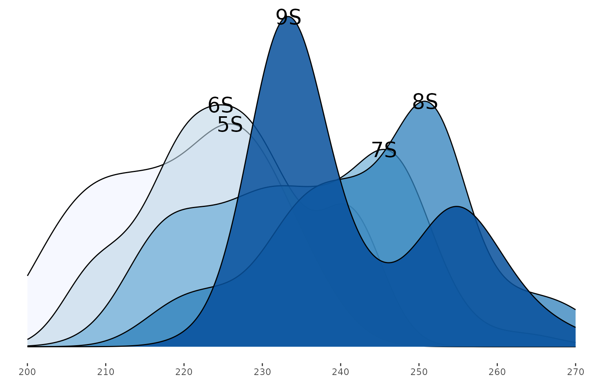
##
## $`schoolname: Mt. Hood High School | studentgender: F`
##
## $`schoolname: Mt. Hood High School | studentgender: M`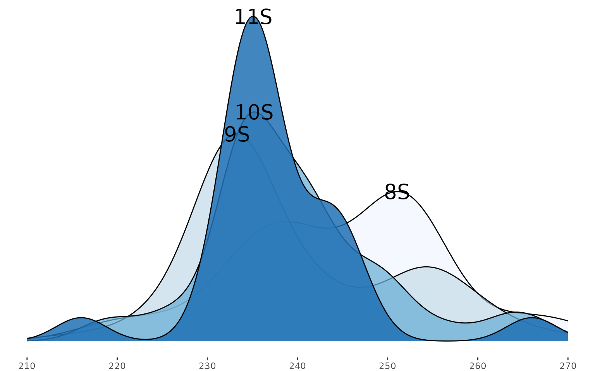
##
## $`schoolname: St. Helens Elementary School | studentgender: F`
##
## $`schoolname: St. Helens Elementary School | studentgender: M`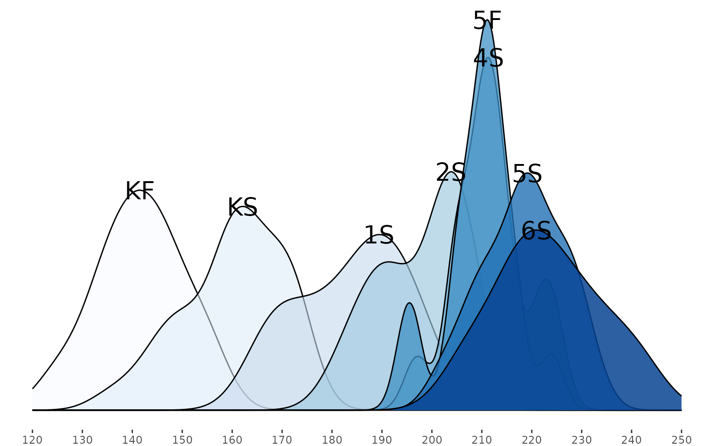
##
## $`schoolname: Three Sisters Elementary School | studentgender: F`
##
## $`schoolname: Three Sisters Elementary School | studentgender: M`
it blends! let’s change our cut_list to demonstrate how
easy it is to show a different cut of our district’s data.
cut_list <- list('districtname', 'studentethnicgroup')
call_list <- list(FALSE, TRUE)
dist_eth <- report_dispatcher(
mapvizieR_obj=mapviz
,cut_list=cut_list
,call_list=call_list
,func_to_call="galloping_elephants"
,arg_list=list('measurementscale'='Mathematics')
)## permutations on selected cuts are:
## [[1]]
## # A tibble: 5 × 3
## districtname studentethnicgroup n
## <chr> <chr> <int>
## 1 NWEA Partner Support Reporting District American Indian or Alaska Native 77
## 2 NWEA Partner Support Reporting District Asian 50
## 3 NWEA Partner Support Reporting District Black or African American 166
## 4 NWEA Partner Support Reporting District Hispanic or Latino 764
## 5 NWEA Partner Support Reporting District White 1613
##
## [1] "districtname: NWEA Partner Support Reporting District | studentethnicgroup: American Indian or Alaska Native"## Warning: Using alpha for a discrete variable is not advised.## [1] "districtname: NWEA Partner Support Reporting District | studentethnicgroup: Asian"## Warning: Using alpha for a discrete variable is not advised.## [1] "districtname: NWEA Partner Support Reporting District | studentethnicgroup: Black or African American"## Warning: Using alpha for a discrete variable is not advised.## [1] "districtname: NWEA Partner Support Reporting District | studentethnicgroup: Hispanic or Latino"## Warning: Using alpha for a discrete variable is not advised.## [1] "districtname: NWEA Partner Support Reporting District | studentethnicgroup: White"## Warning: Using alpha for a discrete variable is not advised.
print(dist_eth)## $`districtname: NWEA Partner Support Reporting District | studentethnicgroup: American Indian or Alaska Native`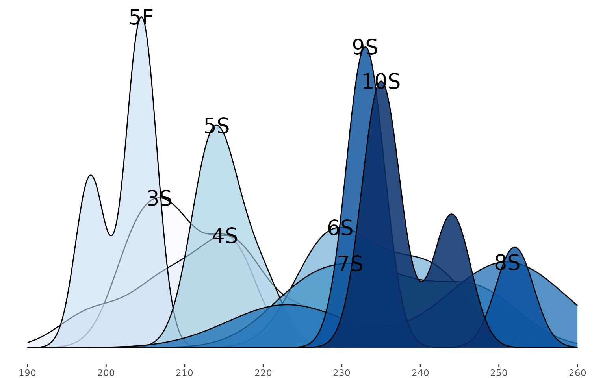
##
## $`districtname: NWEA Partner Support Reporting District | studentethnicgroup: Asian`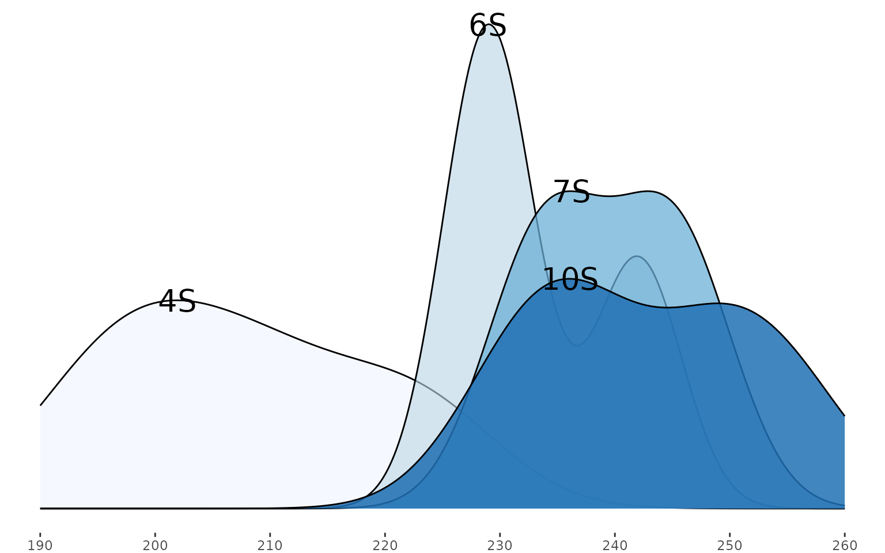
##
## $`districtname: NWEA Partner Support Reporting District | studentethnicgroup: Black or African American`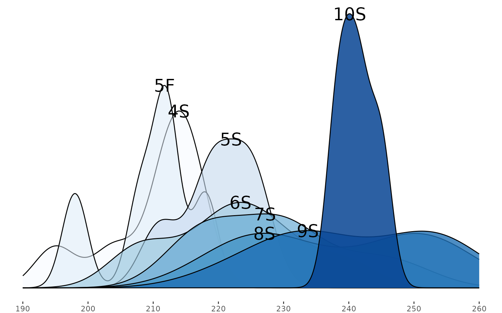
##
## $`districtname: NWEA Partner Support Reporting District | studentethnicgroup: Hispanic or Latino`## Warning in RColorBrewer::brewer.pal(n, pal): n too large, allowed maximum for palette Blues is 9
## Returning the palette you asked for with that many colors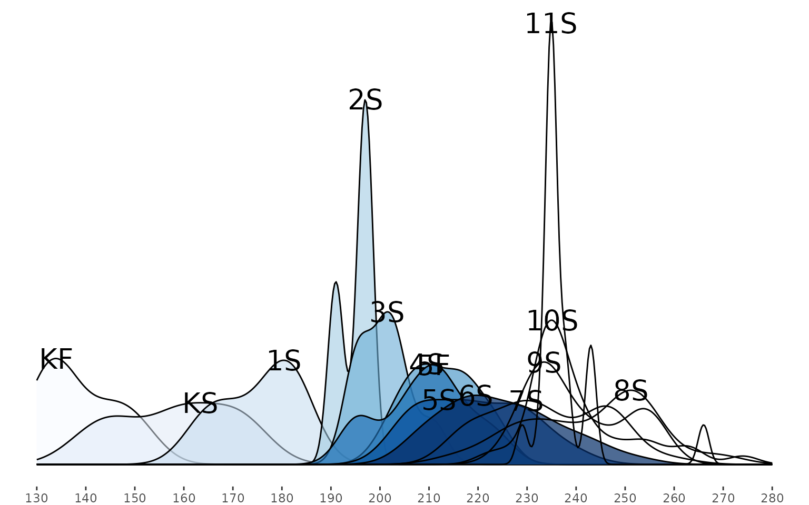
##
## $`districtname: NWEA Partner Support Reporting District | studentethnicgroup: White`## Warning in RColorBrewer::brewer.pal(n, pal): n too large, allowed maximum for palette Blues is 9
## Returning the palette you asked for with that many colors
Postprocessing
You’ll notice that I have been throwing some somewhat esoteric cuts
at report_dispatcher so far. What’s that about?
Well, the sample data set that we have from NWEA is kind of weird. Namely, there’s only one student enrolled at Three Sisters Elementary in the first grade
## termname districtname
## 1 Spring 2013-2014 NWEA Partner Support Reporting District
## schoolname studentlastname studentfirstname studentmi
## 1 Three Sisters Elementary School Smith Ledonna A
## studentid studentdateofbirth studentethnicgroup studentgender grade
## 1 F08000033 11/14/2007 Hispanic or Latino F 1
## fallwinterspring map_year_academic year_in_district studentlastfirst
## 1 Spring 2013 637 Smith, Ledonna
## studentfirstlast implicit_cohort
## 1 Ledonna Smith 2025Go figure. But given a sufficiently large school district, well, you’re going to see some weird edge cases - either dirty data, or just weird one-off situations.
Report dispatcher wraps every function call in try() and
puts the output onto the list. Before it returns the list, it runs a
post-processing function. Currently that function is
only_valid_plots(), which simply drops bad plots from the
object. Errors will still be printed to the console, but you’ll get back
a list of all the plots that we rendered.
cut_list <- list('schoolname', 'studentgender')
call_list <- list(FALSE, TRUE)
sch_grade <- report_dispatcher(
mapvizieR_obj=mapviz,
cut_list=cut_list,
call_list=call_list,
func_to_call="galloping_elephants",
arg_list=list('measurementscale'='Mathematics')
)## permutations on selected cuts are:
## [[1]]
## # A tibble: 8 × 3
## schoolname studentgender n
## <chr> <chr> <int>
## 1 Mt. Bachelor Middle School F 708
## 2 Mt. Bachelor Middle School M 664
## 3 Mt. Hood High School F 314
## 4 Mt. Hood High School M 350
## 5 St. Helens Elementary School F 114
## 6 St. Helens Elementary School M 142
## 7 Three Sisters Elementary School F 197
## 8 Three Sisters Elementary School M 181
##
## [1] "schoolname: Mt. Bachelor Middle School | studentgender: F"## Warning: Using alpha for a discrete variable is not advised.## [1] "schoolname: Mt. Bachelor Middle School | studentgender: M"## Warning: Using alpha for a discrete variable is not advised.## [1] "schoolname: Mt. Hood High School | studentgender: F"## Warning: Using alpha for a discrete variable is not advised.## [1] "schoolname: Mt. Hood High School | studentgender: M"## Warning: Using alpha for a discrete variable is not advised.## [1] "schoolname: St. Helens Elementary School | studentgender: F"## Warning: Using alpha for a discrete variable is not advised.## [1] "schoolname: St. Helens Elementary School | studentgender: M"## Warning: Using alpha for a discrete variable is not advised.## [1] "schoolname: Three Sisters Elementary School | studentgender: F"## Warning: Using alpha for a discrete variable is not advised.## [1] "schoolname: Three Sisters Elementary School | studentgender: M"## Warning: Using alpha for a discrete variable is not advised.
print(sch_grade)## $`schoolname: Mt. Bachelor Middle School | studentgender: F`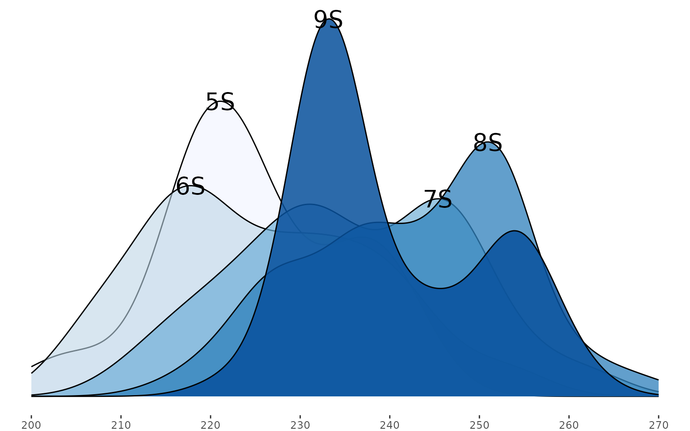
##
## $`schoolname: Mt. Bachelor Middle School | studentgender: M`
##
## $`schoolname: Mt. Hood High School | studentgender: F`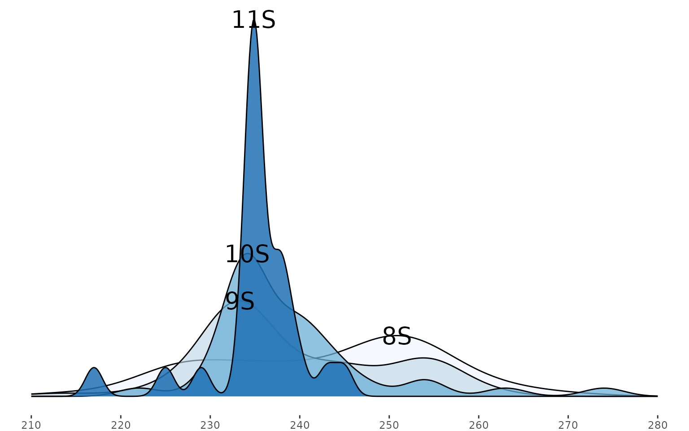
##
## $`schoolname: Mt. Hood High School | studentgender: M`
##
## $`schoolname: St. Helens Elementary School | studentgender: F`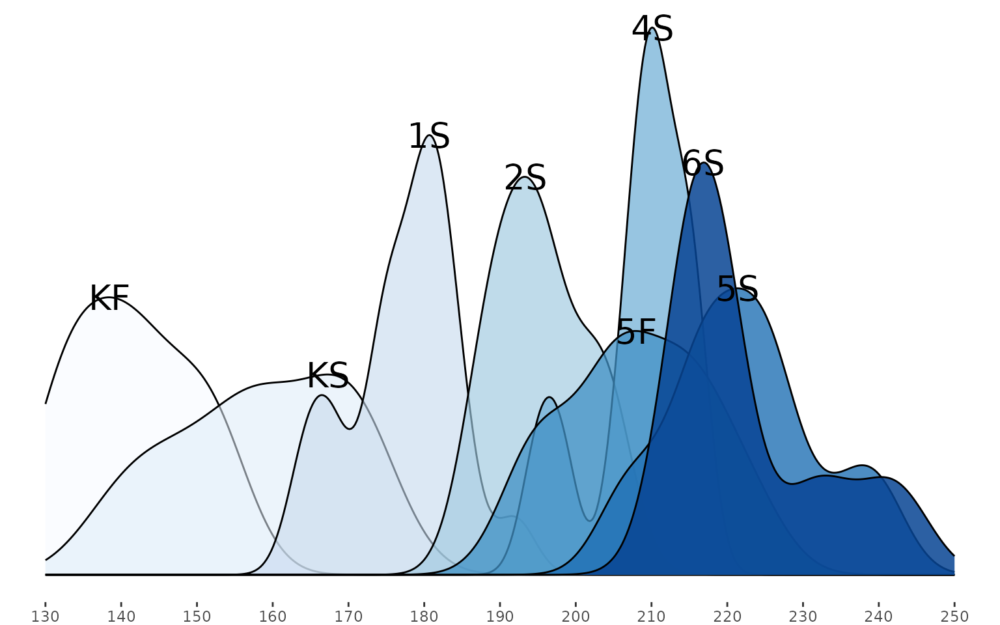
##
## $`schoolname: St. Helens Elementary School | studentgender: M`
##
## $`schoolname: Three Sisters Elementary School | studentgender: F`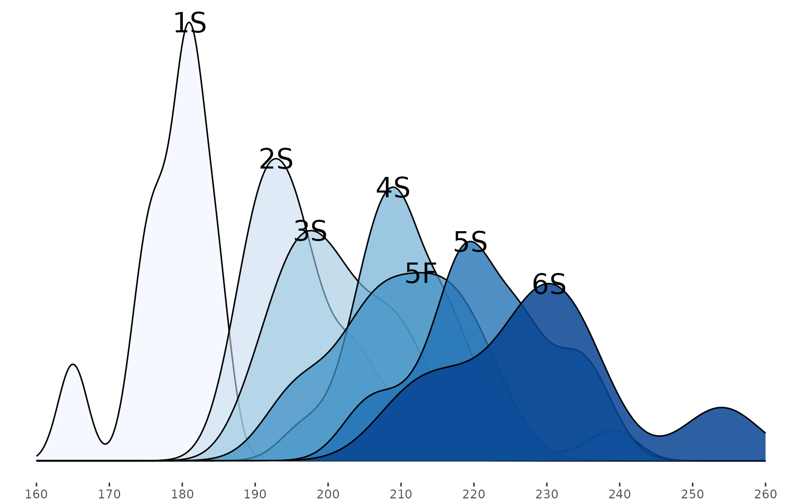
##
## $`schoolname: Three Sisters Elementary School | studentgender: M`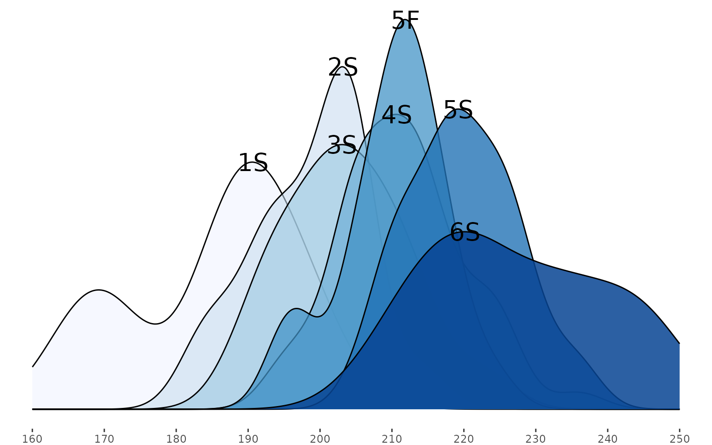
Don’t like this behavior? Roll your own post-processor!
all_the_things <- function(x) {x}
sch_grade_redux <- report_dispatcher(
mapvizieR_obj=mapviz,
cut_list=c('schoolname', 'grade'),
call_list=call_list,
func_to_call="galloping_elephants",
arg_list=list('measurementscale'='Mathematics'),
post_process="all_the_things"
)## permutations on selected cuts are:
## [[1]]
## # A tibble: 14 × 3
## schoolname grade n
## <chr> <int> <int>
## 1 Mt. Bachelor Middle School 6 395
## 2 Mt. Bachelor Middle School 7 480
## 3 Mt. Bachelor Middle School 8 497
## 4 Mt. Hood High School 9 345
## 5 Mt. Hood High School 10 163
## 6 Mt. Hood High School 11 156
## 7 St. Helens Elementary School 0 90
## 8 St. Helens Elementary School 1 64
## 9 St. Helens Elementary School 5 102
## 10 Three Sisters Elementary School 1 1
## 11 Three Sisters Elementary School 2 90
## 12 Three Sisters Elementary School 3 41
## 13 Three Sisters Elementary School 4 182
## 14 Three Sisters Elementary School 5 64
##
## [1] "schoolname: Mt. Bachelor Middle School | grade: 6"## Warning: Using alpha for a discrete variable is not advised.## [1] "schoolname: Mt. Bachelor Middle School | grade: 7"## Warning: Using alpha for a discrete variable is not advised.## [1] "schoolname: Mt. Bachelor Middle School | grade: 8"## Warning: Using alpha for a discrete variable is not advised.## [1] "schoolname: Mt. Hood High School | grade: 9"## Warning: Using alpha for a discrete variable is not advised.## [1] "schoolname: Mt. Hood High School | grade: 10"## Warning: Using alpha for a discrete variable is not advised.## [1] "schoolname: Mt. Hood High School | grade: 11"## Warning: Using alpha for a discrete variable is not advised.## [1] "schoolname: St. Helens Elementary School | grade: 0"## Warning: Using alpha for a discrete variable is not advised.## [1] "schoolname: St. Helens Elementary School | grade: 1"## Warning: Using alpha for a discrete variable is not advised.## [1] "schoolname: St. Helens Elementary School | grade: 5"## Warning: Using alpha for a discrete variable is not advised.## [1] "schoolname: Three Sisters Elementary School | grade: 1"
## Error in mv_opening_checks(mapvizieR_obj, studentids, 1) :
## this plot requires at least 1 student.
## [1] "schoolname: Three Sisters Elementary School | grade: 2"## Warning: Using alpha for a discrete variable is not advised.## [1] "schoolname: Three Sisters Elementary School | grade: 3"## Warning: Using alpha for a discrete variable is not advised.## [1] "schoolname: Three Sisters Elementary School | grade: 4"## Warning: Using alpha for a discrete variable is not advised.## [1] "schoolname: Three Sisters Elementary School | grade: 5"## Warning: Using alpha for a discrete variable is not advised.
print(sch_grade_redux)## $`schoolname: Mt. Bachelor Middle School | grade: 6`
##
## $`schoolname: Mt. Bachelor Middle School | grade: 7`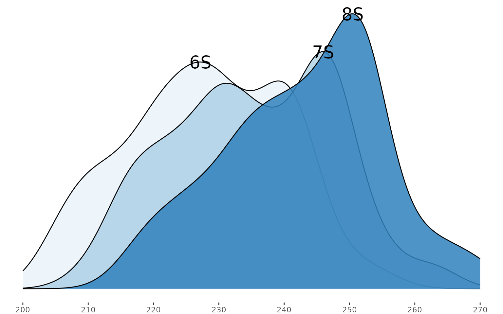
##
## $`schoolname: Mt. Bachelor Middle School | grade: 8`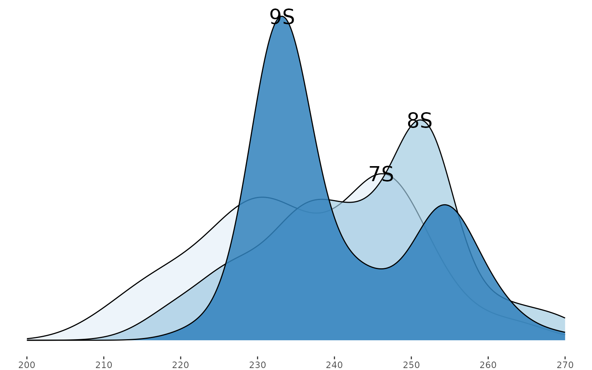
##
## $`schoolname: Mt. Hood High School | grade: 9`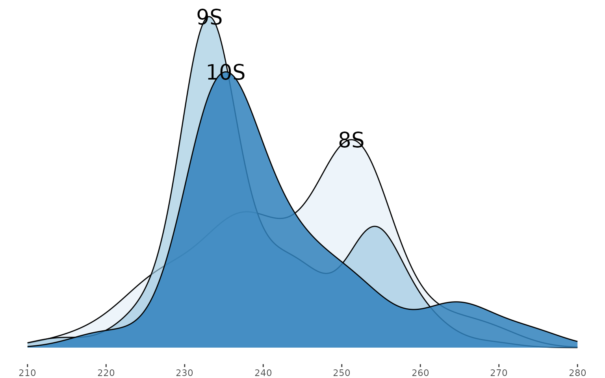
##
## $`schoolname: Mt. Hood High School | grade: 10`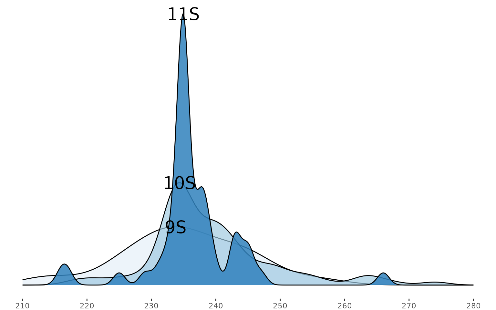
##
## $`schoolname: Mt. Hood High School | grade: 11`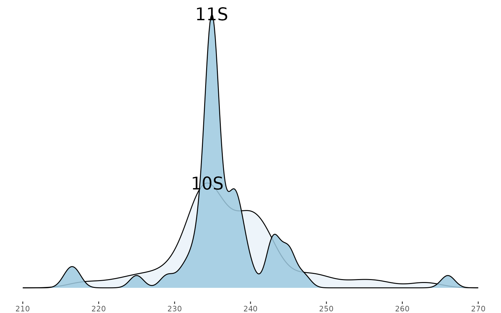
##
## $`schoolname: St. Helens Elementary School | grade: 0`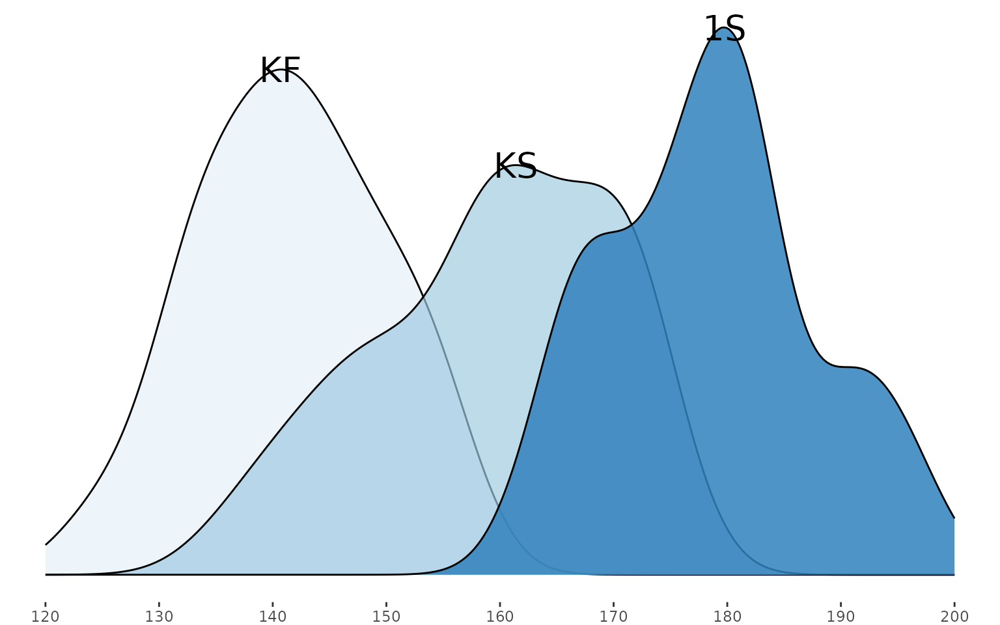
##
## $`schoolname: St. Helens Elementary School | grade: 1`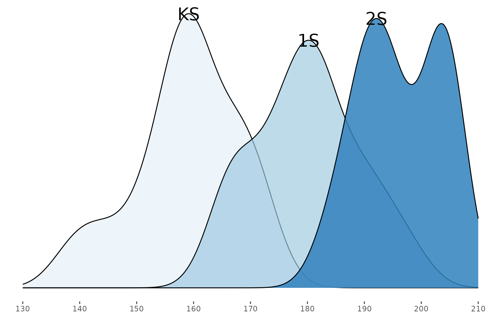
##
## $`schoolname: St. Helens Elementary School | grade: 5`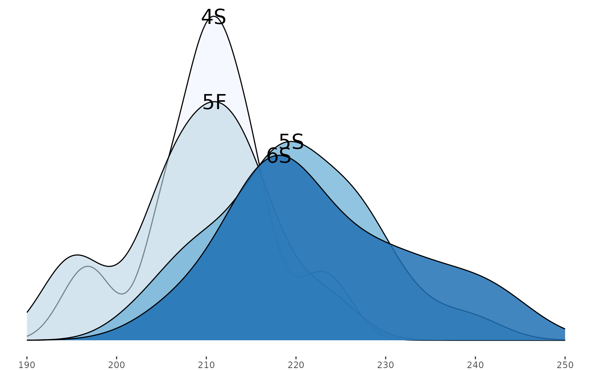
##
## $`schoolname: Three Sisters Elementary School | grade: 1`
## [1] "Error in mv_opening_checks(mapvizieR_obj, studentids, 1) : \n \033[1m\033[22mthis plot requires at least 1 student.\n"
## attr(,"class")
## [1] "try-error"
## attr(,"condition")
## <error/rlang_error>
## Error in `mv_opening_checks()`:
## ! this plot requires at least 1 student.
## ---
## Backtrace:
## ▆
## 1. ├─mapvizieR::report_dispatcher(...)
## 2. │ ├─base::try(...)
## 3. │ │ └─base::tryCatch(...)
## 4. │ │ └─base (local) tryCatchList(expr, classes, parentenv, handlers)
## 5. │ │ └─base (local) tryCatchOne(expr, names, parentenv, handlers[[1L]])
## 6. │ │ └─base (local) doTryCatch(return(expr), name, parentenv, handler)
## 7. │ └─base::do.call(what = func_to_call, args = this_arg_list, envir = rd_env)
## 8. └─mapvizieR::galloping_elephants(...)
## 9. └─mapvizieR::mv_opening_checks(mapvizieR_obj, studentids, 1)
##
## $`schoolname: Three Sisters Elementary School | grade: 2`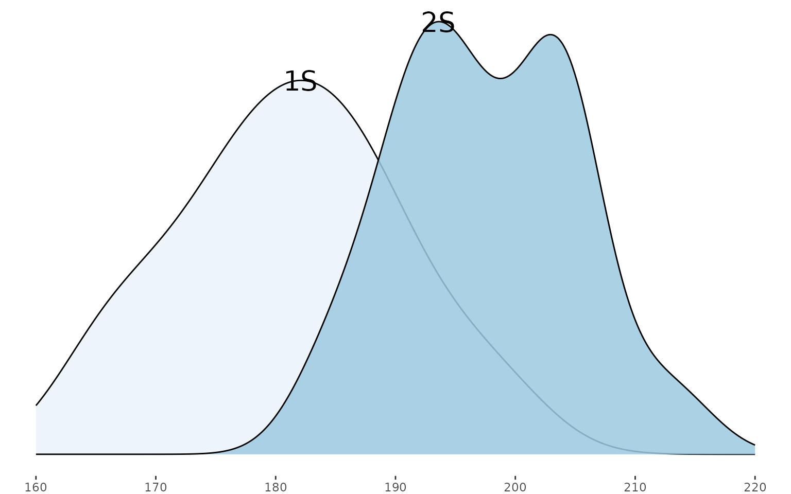
##
## $`schoolname: Three Sisters Elementary School | grade: 3`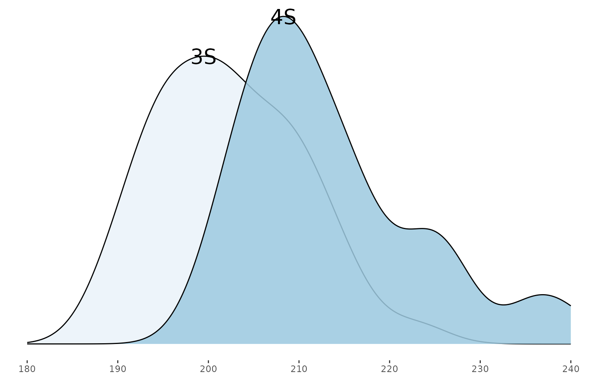
##
## $`schoolname: Three Sisters Elementary School | grade: 4`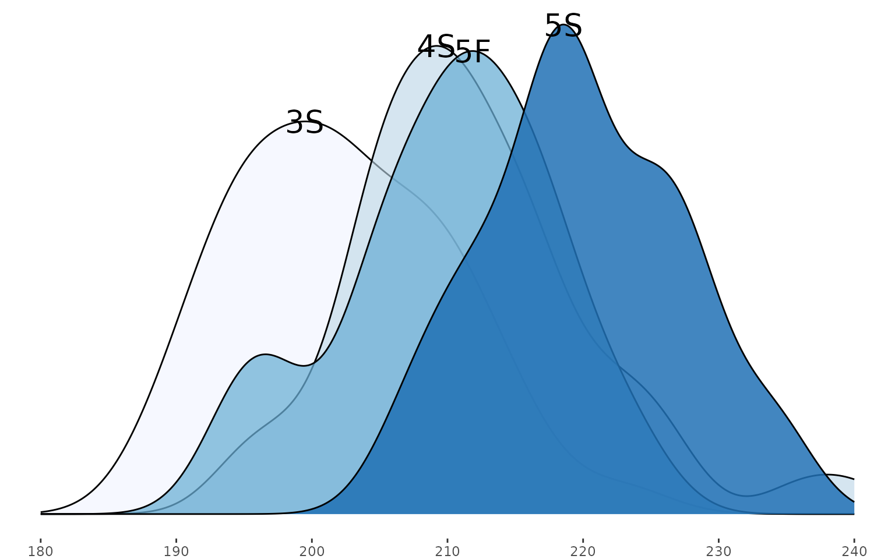
##
## $`schoolname: Three Sisters Elementary School | grade: 5`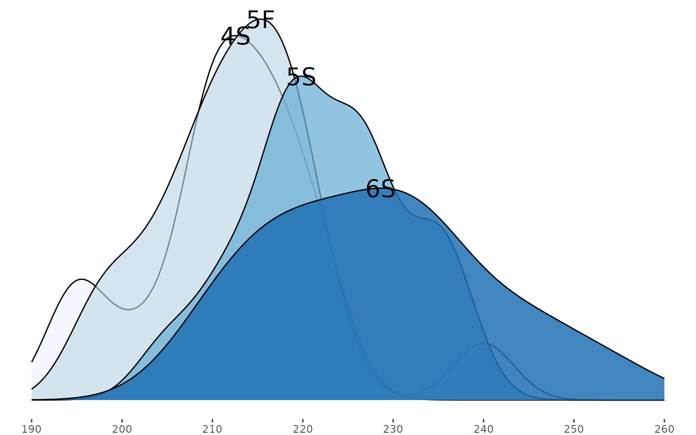